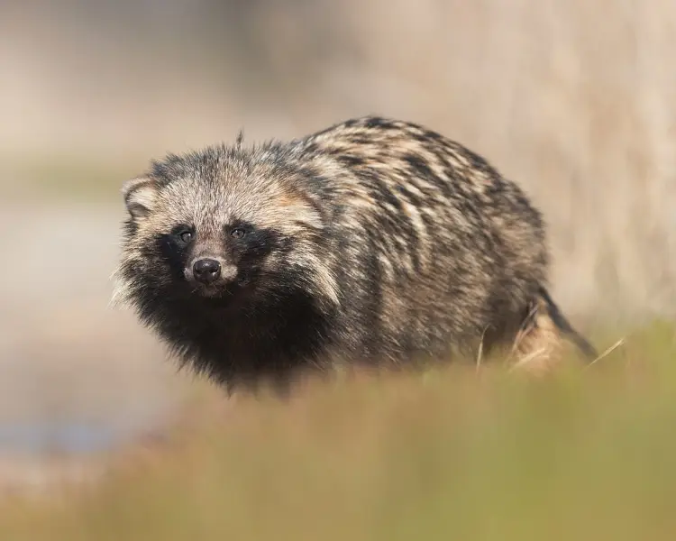

Unknown
7-12 years
50 km/h (31 mph)
5-10 kg (11-22 lbs)
50-60 cm (20-24 inches)
The Raccoon Dog (*Nyctereutes procyonoides*), also known as the tanuki, is a canid native to East Asia, with some populations introduced to Europe. Despite its name, the Raccoon Dog is not closely related to raccoons, but rather to dogs and foxes. It has a distinctive facial mask of fur and is known for its adaptability to various habitats, including forests, grasslands, and urban areas. The Raccoon Dog is omnivorous and feeds on a variety of plant material, small mammals, insects, and birds. Its population is not fully understood, and the species is classified as 'Least Concern' by the IUCN.